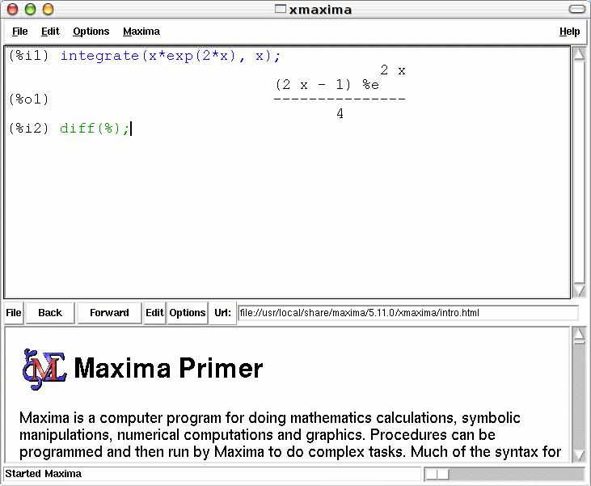

| [ << ] | [ < ] | [ Up ] | [ > ] | [ >> ] | [Top] | [Contents] | [Index] | [ ? ] |
By default, Xmaxima creates a window split horizontally into two sub-windows. The one on the top is the text window, where all the commands for Maxima will be entered and the output returned by Maxima will be printed.
The lower window is Xmaxima’s browser; it is used to show a quick primer, a copy of the Maxima manual and any other HTML you might want to download from the Web.
The cursor is the small vertical bar that blinks in the text Window. The text that is currently being written in the text window and which could be submitted to Maxima for evaluation is rendered in green. The text sent back by Maxima is rendered in black, and the text that has been previously entered by the user and that was already evaluated by Maxima is rendered in blue.
The relative size of the two sub-windows can be adjusted, by dragging
the horizontal bar that separates them, with the mouse. The browser
window can be eliminated, leaving only a larger text window, and recovered
again, by using the section ‘Toggle Browser Visibility’ in the
Options menu.
You can also choose different types and sizes for the fonts, in the
section ‘Preferences’ of the Options menu; those settings
will be saved for future sessions.
| [ << ] | [ >> ] | [Top] | [Contents] | [Index] | [ ? ] |
This document was generated on June 7, 2020 using makeinfo.